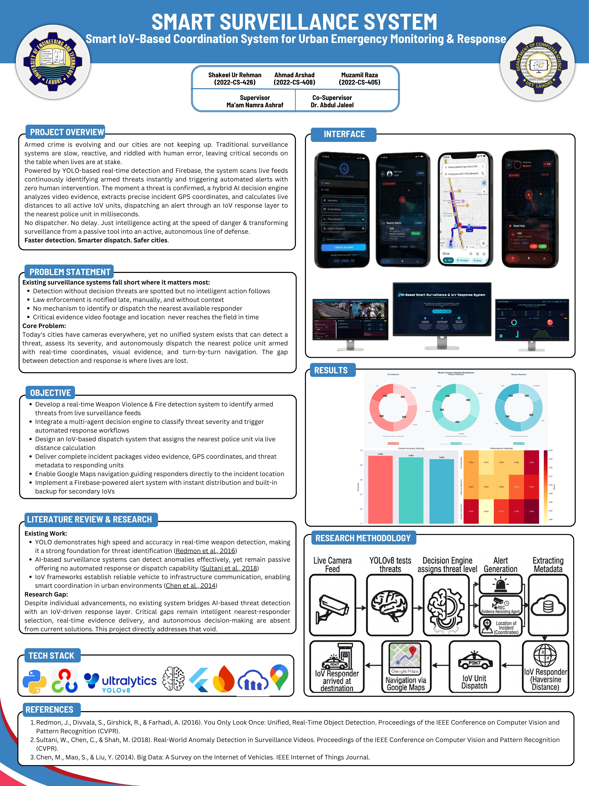

01 / THE PROBLEM
Why build it?
A visual detection is only one part of incident monitoring. The next challenge is making detections available to a coordinated response workflow.
COMPUTER VISION / ENGINEERING PROJECT
Visual intelligence meets multi-agent coordination.

An urban monitoring prototype connecting visual detections, incident assessment, and emergency response coordination.
View source on GitHub ↗01 / THE PROBLEM
A visual detection is only one part of incident monitoring. The next challenge is making detections available to a coordinated response workflow.
02 / THE IMPLEMENTATION
Academic team project by Shakeel Ur Rehman, Ahmad Arshad, and Muzammil Raza at UET Lahore. The project connects YOLO-based visual detection with a LangGraph multi-agent pipeline, evidence storage, and web and mobile interfaces. The repository includes recorded dashboard and detection walkthroughs.
A GOOD PLACE TO START